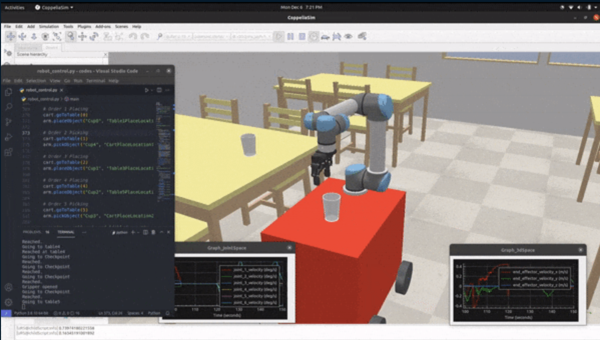

About me
| Engineer | Developer | Researcher | Leader |
Welcome to my profile. I am a dedicated professional in the field of AI and Robotics, focusing on
Perception and Reinforcement Learning. With a profound passion for developing intelligent systems
that can learn, adapt, and plan strategically. I am thankful for the privilege of working on cutting-edge technology across a range of products,
including autonomous robots, aerial drones, and self-driving vehicles, while gaining valuable experience in diverse team environments.
Explore my journey as I contribute in shaping the future of intelligent technologies through research, innovation, and practical application.
Professional Skills:
Multimodal AI, Perception, 3D Computer Vision, Scene Reconstruction, RL, Pytorch, Python, CUDA, C++, State Estimation, Controls, ROS-2, Sim2Real
Previous Projects
DL/ML Projects
- Learning planner parameters for autonomous vehicle.
- Learning Navigation in game environment.
- Robot Trajectory planning in dynamic environment.
Paper Implementations:
- Re-implementation of Grokking and GrokFast phenomenon. (github).
- UNI-AD: Anomaly detection over multi class distribution.
- Objects-as-points: Surrounding vehicle detection and pose prediction.
Fun with Nerf
A fun little demo of a lenticular effect using NeRF
NGP from Scratch
Elegant implementation of NeRF for 2D and 3D reconstruction
NeRF from Scratch
Nerf with minimalistic implementation of stratified and hierarchical sampling
Alpha Zero from Scratch
AlphaZero and MCTS algorithm applied to game of TicTacToe and ConnectFour
Volumetric TSDF Fusion in PyTorch
Fuse RGB-D images using Truncated Sign Distance Function (TSDF) Fusion with Live visualization
Home organizing robot
Autonomous application based on ROS, for search and manipulation of small objects.
Projects development was performed using Agile development process and uses
navigation stack, Moveit and
computer vision to complete the task.
Gantry Crane Control
LQR and LQG control and Kalman filter for a gantry crane with 2 masses suspended at different height.
Pose Estimation in Structured Environment
This project contains a ROS package written for pose estimation in a structured environment using
visual odometry from single monocular camera and knowledge about the surrounding environment. This package
makes use of projective geometry and predictive filtering for achieving centimeter level accuracy in
pose estimation.
Spline based motion planning
The project uses spline based motion planning for autonomous guided vehicles in a dynamic environment.
Optimization is performed on the B-Spline
generated from vehicle's current position to the goal position, based on the dynamic constraints of vehicle and the environment.

Serving robot
This project demonstrates the working of robot in constrained environment by making appropriate
use of forward, inverse kinematics, 4 wheel drive with
pure pursuit control for path following to serve cups to
and from required table in the environment.
Work Experience
Research Engineer @Meta
(Aug 2025 - Present)
3D Scene Reconstruction Engineer @ Quidient
(Feb 2023 - Aug 2025)
- Lead developer and contributor in the successful development of specialized product demo for major client, resulting in significant source of funding for the company.
- Working on development of optimization algorithm for scene reconstruction of highly specular objects using light polarization.
- Developed alignment pipeline for camera poses and environment entities achieving a reprojection error of < 0.8 pixel.
- Designed and implemented new architecture for efficient solving of scenes from dense point clouds.
Software Engineer Intern @ Nuro
(May 2022 - Aug 2022)
- Developed a proposed concept of an automated framework to monitor actuator and controller performance of AV.
- System built with hardware agnostic APIs at its core, allowed it to scale and support different types of actuators and multiple comm. buses in parallel.
- Within limited internship period, delivered production ready product to unblock the team for critical public road deployment milestones.
- Developed indoor autonomous package delivery robot.
- Working on development and integration of custom Reinforcement Learning based Local planner and controller plugins in Nav2.
- Developed ROS2 package of the robot model for training in the gazebo simulator.
- Designed training environment for simulating intelligent pedestrians to match the real world scenario in a crowded building.
- Led the development of Indoor Localization for FLytWare project. The application
developed using the combination of EKF, ORB-SLAM and DL approach, was able to achieve 20 cm localization
accuracy in a GPS denied environment within 800m2 field.
- Developed ROS compatible trajectory planner by implementing 3D A* path planner for the fleet of drones to
efficiently reach multiple locations while avoiding collisions with other drones.
- Effectively used LaneNet Deep Learning model to localize the drone in the environment with dynamic lighting condition.
- Developed and deployed Precision Landing Failsafe application for large commercial drones.
- Designed electronics for the Charging Pad of quadrotor with features like reverse polarity and short circuit protection.
Robotics Software Intern @ IIT Bombay.
(2018)
- Worked on dynamic Path planning for MAVs which involved planning a path for a quadcopter and following it in an
indoor environment while avoiding moving obstacles.
- Implemented robust controller for stability of drone while tracking the drone pose using fixed overhead camera
- Developed method was robust enough to make the drone fly through 40cm diameter hoops. RRT* Path planner was
used to avoid moving obstacles.
- Effectively used simulation software (CoppeliaSim) to emulate the real scene and plan the trajectory accordingly.